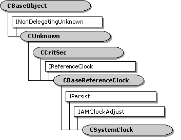

description: The CSystemClock class implements a clock that returns the system time. ms.assetid: 22f8b641-6472-433f-bff4-4e62eae25c9b title: CSystemClock class ms.topic: reference ms.date: 4/26/2023 topic_type:
[The feature associated with this page, DirectShow, is a legacy feature. It has been superseded by MediaPlayer, IMFMediaEngine, and Audio/Video Capture in Media Foundation. Those features have been optimized for Windows 10 and Windows 11. Microsoft strongly recommends that new code use MediaPlayer, IMFMediaEngine and Audio/Video Capture in Media Foundation instead of DirectShow, when possible. Microsoft suggests that existing code that uses the legacy APIs be rewritten to use the new APIs if possible.]

The CSystemClock class implements a clock that returns the system time.
This class derives from the CBaseReferenceClock class, and adds support for the IPersist and IAMClockAdjust interfaces.
| Public Methods | Description |
|---|---|
| CreateInstance | Creates a new instance of this object. |
| CSystemClock | Constructor method. |
| IAMClockAdjust Methods | Description |
| SetClockDelta | Adjusts the clock time. |
| IPersist Methods | Description |
| GetClassID | Returns the class identifier (CLSID) of the object. |
Â
Â
Â